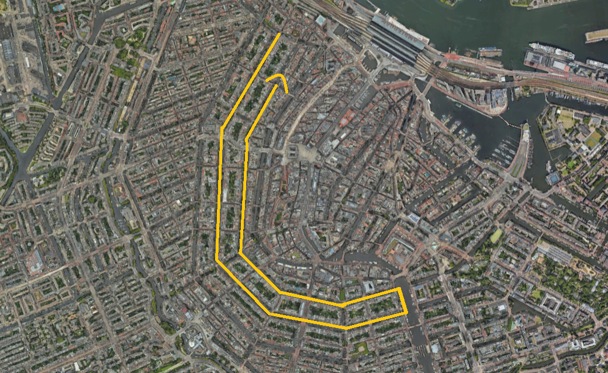

Assignment 1 - Water
Advice
The route will start at the bridge between Brouwersgracht and Keizersgracht, then the entire canal will be swum, followed by a left turn over the Amstel River to swim along Herengracht. The endpoint is at the bridge between Herengracht and Herenstraat. This totals 5 kilometers. This route was chosen because, according to PDOK, there is no navigable route for commercial shipping. It is possible to navigate this route, but it is primarily for recreational and tour boats. During events, these routes may temporarily be unavailable. An alternative for these boats is the Prinsengracht, which is also the waterway from Westerdok to the Amstel. A small section of the Amstel will be cordoned off, allowing a portion of the Amstel to remain accessible. This is option that came out the best, because for boats it has the least amount of nuisance, while still using canals of Amsterdam as mentioned in the assignment.
While no specific water quality data has been obtained, the Amsterdam City Swim shows that the canals of Amsterdam are swimmable, provided there has not been heavy rainfall. This is because, during rain in Amsterdam, the excess sewage water is discharged into the canals, leading to pollution of the canals. This results in unsafe swimming water. To be sure the water is safe, it recommended to test the water a day and a few hours before the competetion starts.
1. The event can’t have an impact on commercial water transport.
In our definition of (commercial) water transport, includes commercial deliveries and cargo, as well as construction boats, points of loaden and unloading, and the ferries.
- Ferry’s operate on the IJ, which excludes the IJ from the swimming route. (GVB, n.d.)
- This geodata is not downloadable. The geospatial data is represented through points and lines.
- The same is true for commercial transport by boat. However, besides the IJ, commercial water transport passes through the Amstel and from the Amstel through the Westerdok using the Prinsengracht. (PDOK, n.d. a)
- The geodata can be downloaded in gpkg format. It is geospatial data, where the data is represented geometrically through lines.
- There are different libraries to read this data type, such as geopandas and Fiona.
- The municipality of Amsterdam has spatial data of the boarding and disembarking points of water transport vessels. Because of this information, canals which less points can be included in the route, to avoid disruption. (Gemeente Amsterdam, n.d. a)
- This data can be downloaded in json and csv. There are human readable text files. The csv data is stored alphanumerical, with words and numbers. The geospatial data is represented through points.
- The csv data is readable in Python. Python also has a built-in package called json, which can be imported.
2. It would be appreciated if the event has small impact on the routes of the canal boats.
To make sure the impact on canal boats is being minimalized, their location and routs need to be analyzed.
- The municipality of Amsterdam has spatial data on the boarding and disembarking points of passenger shipping (Gemeente Amsterdam, n.d. a).
- This data can be downloaded in json and csv. There are human readable text files. The csv data is stored alphanumerical, with words and numbers. The geospatial data is represented through points.
- The csv data is readable in Python. Python also has a built-in package called json, which can be imported.
- There is no (accessible) spatial data on the routes of the canal boats. The boarding and disembarking points can give some indication. Additionally, the Grachtenmonitor 2022 (p.10, p. 13) gives insight in the locations with the most boat passings a day. This geospatial data is only accessible through this map. Only the image can be used and analyzed, not the actual data.
3. What is the pollution level of the canals and is there data from all the canals? Are the canals monitored and can you swim there safely?
The route of the Amsterdam city swim is being monitored by Waternet during the year (Amsterdam City Swim, n.d.). However, only the quality of official swimming locations is being published regularly. The other data isn’t published online or anywhere and is private to Waternet.
- There is a national database available with water quality results of official swimming locations. This can provides insights in the water quality of official swimming locations in Amsterdam. These locations can possibly be included in the route. (PDOK, n.d. b)
- The geodata can be downloaded in gpkg format. It is geospatial data, where the data is represented geometrically through points.
- There are different libraries to read this data such as pygml and geopython.
- This is temporal data, with an interval of 14 days during the swimming season.
- The municipality of Amsterdam provides spatial data on the location of the official swimming location (Gemeente Amsterdam, n.d. b).
- This data can be downloaded in json and csv. There are human readable text files. The csv data is stored alphanumerical, with words and numbers. The geospatial data is represented through points.
- The csv data is readable in Python. Python also has a built-in package called json, which can be imported.
- There is more specific data available of the water quality of some locations. This dates from 2019. (Onderzoek Amsterdam, n.d.)
- This alphanumerical data set is stored in an excel file. This is no geospatial nor temporal data.
- The most used packages for working with excel files in Python is openpyxl.
- Since overall data on the water quality of the canals is not (publicly) available, looking at the sewage system might be helpful. Mixed sewers can overflow in times of heavy rainfall, leading to unsafe swimming water. (Data en informatie, n.d.)
- This geospatial data is not downloadable through this website. This geospatial data is represented through lines.
- According to Waternet, they are monitoring the water quality of the canals using sensors. Maybe this data can be made available (Waternet, 2019).
- The Grachtenmonitor 2022 (p. 16) does show that the canals are getting cleaner. In 2022, the overall score was 8.2.
Extra excercise
Using the data from Water in Amsterdam (Onderzoek Amsterdam n.d.).
import pandas as pd #Change the path to the downloaded file xlsx = 'C:/Users/tygoh/Downloads/2020_jaarboek_941_4eccf4d8b6.xlsx' df = pd.read_excel(xlsx) #from txt to NaN, so it is all numeric df['totaal fosfor'] = pd.to_numeric(df['totaal fosfor'], errors='coerce') column1 = 'totaal fosfor' min_value = df[column1].min() max_value = df[column1].max() print(f"Minimum value in {column1} : {min_value}") print(f"Maximum value in {column1} : {max_value}")Minimum value in totaal fosfor : 0.02
Maximum value in totaal fosfor : 2.03
References
- GVB (n.d.). Reisinformatie GVB.https://reisinfo.gvb.nl/nl/lijnen?boat&show
- PDOK (n.d. a). Vaarweg informatie Nederland. https://www.pdok.nl/atom-downloadservices/-/article/vaarweg-informatie-nederland-vin-
- Gemeente Amsterdam (n.d. a). Op- en afstapplaatsen & ligplaatsen passagiersvaartuigen. https://maps.amsterdam.nl/varen/
- Data en informatie (n.d.). Data en informatie Amsterdam. https://data.amsterdam.nl/data/
- Onderzoek Amsterdam (n.d.).Water in Amsterdam. https://onderzoek.amsterdam.nl/dataset/water-in-amsterdam
- Gemeente Amsterdam (n.d.). Zwem- en speelwater. https://maps.amsterdam.nl/zwemwater/
- PDOK (n.d.). https://www.pdok.nl/introductie/-/article/zwemwater-provinciaal-en-rijkswateren-